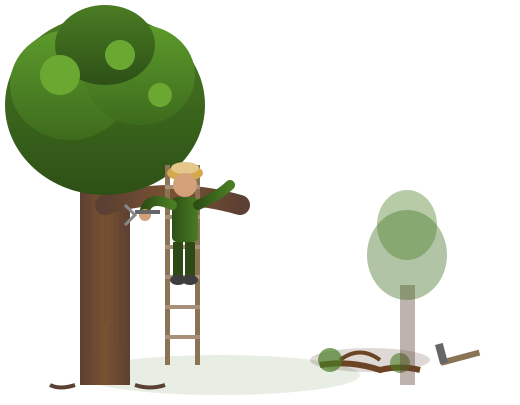

Arborist i Egersund
Trekonsult tek oppdrag i Egersund og heile Eigersund kommune. Profesjonell trepleie, trefelling og rådgiving frå sertifisert arborist — også i Dalane-regionen.
Trepleie i Egersund og Dalane
Trekonsult held til i Egersund, og Eigersund kommune er heimebanen vår. Med kontor lokalt har vi kort veg til oppdrag i heile Dalane-regionen.
I Egersund sentrum er det mange eigedommar med store tre tett på hus og nabogrenser. Tronge tomter gjer at trefelling ofte må utførast som seksjonsfelling — der treet vert teke ned bit for bit med klatre- og riggteknikk. Dette krev spesialkompetanse og riktig utstyr for å gjerast trygt.
Eigersund har også mykje verdifull trevegetasjon utanfor sentrum. Langs kysten, i Hellvik og innover mot Hellelandsområdet finn ein alt frå vindherda furutre til store eikar og andre lauvtre. Falke Omdal har tidlegare halde foredrag om tre i hagen på Eigersund frivilligsentral, og kjenner området godt.
Som lokal arborist i Egersund kan vi stille raskt — anten det gjeld akutt stormskade eller planlagde oppdrag. For hus- og hytteeigarar i Dalane-regionen er det ein fordel å ha ein kvalifisert arborist i nærleiken som kjenner lokale tre og tilhøve.
Tenester i Eigersund og Dalane
- Trefelling — trygg felling og seksjonsfelling i tronge omgjevnader
- Beskjæring — fagleg stell av store tre på eigedomen
- Tilstandsvurdering — er treet friskt og trygt?
- Nabotvistar — sakkunnig vurdering ved usemje om tre
- Verdivurdering — dokumentasjon av treets verdi (VAT-19/NS 3846)
- Stormskade — hjelp etter uvêr og vindfall

Oppdrag i heile Dalane
Vi tek oppdrag i Eigersund og nærliggjande kommunar i Dalane-regionen.
Med kontor i Egersund dekkjer vi heile Eigersund kommune, Bjerkreim og resten av Dalane-regionen. Ta kontakt for eit uforpliktande prisoverslag.
Kontakt oss om trepleie i Eigersund
Ta kontakt for ein uforpliktande samtale om dine behov.
Telefon
45 22 55 22E-post
falke@trekonsult.noRask vurdering?
Send gjerne bilde og adresse på e-post eller SMS, så gir vi rask tilbakemelding om vidare prosess.
Ring oss nå